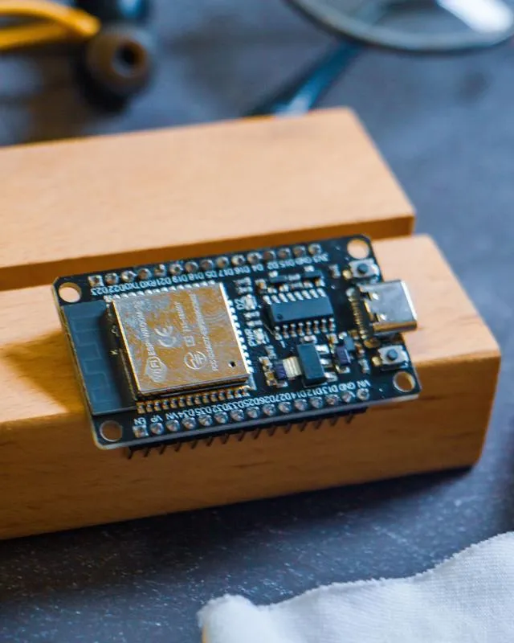

Servicios: IA privada, software a medida e IoT
Seis servicios, un solo equipo, para llevar tu proyecto de la idea a producción. Cuando el dato no puede salir, trabajamos en tu propia infraestructura.
Hablemos de tu proyectoQué hacemos
Cada ficha explica para quién es el servicio, qué incluye y qué hemos entregado.
IA privada y automatización
Asistentes, agentes y automatizaciones que funcionan en tu propia infraestructura, con tus datos bajo control.
+Decisiones con IA
Limpiamos y analizamos tus datos con IA y creamos modelos de IA para la toma de decisiones de tu equipo.
+Software a medida
Plataformas web, apps móviles y backend para tu negocio, del primer prototipo a producción.

+IoT y hardware
Dispositivos conectados, sensores y prototipos, con el software que los une.
+Interfaces para mayores
Diseñamos y evaluamos interfaces pensadas para personas mayores, con usabilidad y accesibilidad probadas.
+Investigación e innovación
Apoyo técnico para definir, diseñar y prototipar proyectos de innovación tecnológica y de IA.
¿Por dónde empezar?
No hace falta que sepas qué servicio necesitas: cuéntanos el problema y te decimos honestamente por dónde ir.
Por el problema, no por la tecnología
Empezamos entendiendo qué quieres resolver y para quién. Si la respuesta es «esto no es para nosotros», te lo decimos desde el principio.
Seis servicios, un mismo equipo
Los servicios se combinan: un proyecto suele tocar software a medida, interfaces y datos. Si buscas producto listo para usar, mira nuestras soluciones de IA privada.
Tus datos, en tu infraestructura cuando haga falta
Salud, investigación y entornos regulados no admiten improvisación: el dato trabaja dentro de tu infraestructura.
Empieza por una conversación de treinta minutos
Cuéntanos qué necesitas y te decimos honestamente si podemos ayudarte.